什么是 DBmind？
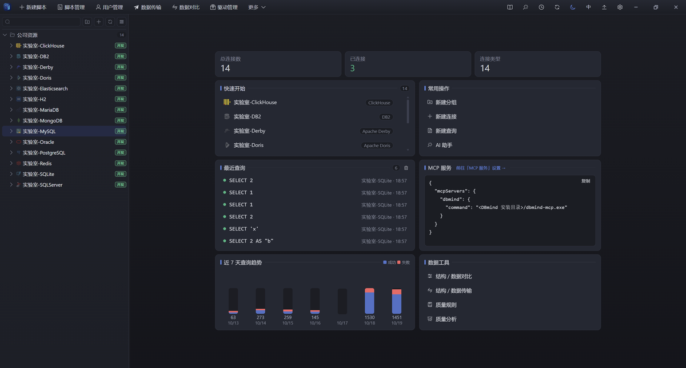
首页：左侧连接树、右侧脚本页签，一个窗口管完所有库 DBmind = Database + Mind ：给数据库装上「大脑」的统一管理工作台。它把连接管理、SQL 编辑、数据表格、AI 助手、事务与安全护栏放进同一个客户端，开箱即用。
DBmind 不绑定某一种数据库：MySQL、PostgreSQL、Oracle、SQL Server、ClickHouse、Redis、MongoDB、达梦、人大金仓等 17+ 种数据源共用一套操作习惯 —— 学一次，到处用。
数据边界 ：本地运行、默认不联网；AI 默认关闭，只在你配好模型之后才工作 —— 它到底带走了什么，逐项写在
AI 会把什么发给模型 ，不是一句「我们重视隐私」。
核心特性一览
⌨️ 智能 SQL 编辑器 VS Code 同款内核：上下文补全、格式化、分块执行、执行历史。
🧠 AI 同事 解释 / 优化 / 修错 / 诊断 / 问答之外，还能自主排查：自己巡检、给索引建议、看同步备份状态，改动做成变更单等你批准。
🛡️ 事务模式 写语句不再自动提交：先改、自查、回滚或提交，安全闭环。
✏️ 结果集直接编辑 双击改值、缓冲提交，快照守卫绝不改错行。
⚡ 千万级结果集 虚拟滚动 + 服务端分页 + 18× 压缩，首屏 <1s。
📊 透视与导出 框选即汇总、分组下钻；CSV / Excel / JSON / INSERT 导出。
🧱 表结构与对象 字段 / 索引 / 注释直接改，执行前先看完整 ALTER；视图、过程、触发器可转 ALTER 编辑。
🧑💼 用户与权限 用户 / 角色按引擎适配，权限分层勾选，勾一次即预览 GRANT / REVOKE 差量。
🗺️ ER 关系图 命名约定 + 真外键推断关系，拖拽缩放，导出 PNG / SVG。
📈 监控与运维 会话 / 锁 / 指标，终止会话；备份还原、生成测试数据、全局对象搜索。
支持的数据源
17 种数据源共用一套操作习惯：同一个编辑器、同一张结果表格、同一套事务按钮与对象树 —— 换库不用换脑子。JDBC 驱动按需下载，首次连接对应类型时自动取，内网可指向私有镜像。
关系型 · 10 种 MySQL、MariaDB、PostgreSQL、人大金仓 KingbaseES、Oracle、SQL Server、IBM Db2、达梦 DM、Apache Derby、H2
分析型 · 2 种 ClickHouse、Apache Doris —— 连接分组里单独标为 OLAP，库 / 表 / 分区语义按各自引擎处理，不和关系型混在一起
嵌入式 / 文件 · 2 种 SQLite、DuckDB —— 直接打开本地文件，不需要服务端，也不需要 Java 宿主
NoSQL · 3 种 Redis、MongoDB、Elasticsearch —— 连接、库 / 集合、文档浏览与监控按原生语义走
做不到的会明说，不装作人人满分 ：
会话事务 ：走 JDBC 宿主的引擎都支持（改完自查、回滚或提交）；SQLite 用内核原生驱动，没有会话级事务，事务按钮直接不渲染，不会点了没反应用户与权限 ：MySQL / MariaDB / PostgreSQL / 金仓 / SQL Server / Oracle / ClickHouse / Doris / H2 等按各自方言给出用户、角色与分层权限；Db2、Derby 的用户由数据库外部认证提供，界面如实说明「这里没有可管理的用户」，而不是给一张空表服务监控 ：MySQL / MariaDB / PostgreSQL / 金仓 / SQL Server / ClickHouse / Doris 有会话、锁与库级指标；其余引擎没有监控接口，返回「不支持 + 原因」，不画空图表结构编辑 ：能力按引擎下发，做不到的项直接置灰并说明原因（比如部分引擎不支持字段改名、ClickHouse / Doris 的表选项建表后不可改）；SQLite 只允许改列名数据传输 ：关系型与分析型全部支持；SQLite / DuckDB / H2 / Derby 与三种 NoSQL 没有对端写入通道，入口不出现DDL 查看 ：能原生取到定义的引擎直接给；Db2 / Derby 按列元数据自拼一份 —— 宁可自拼，也不让「查看 DDL」点开是空的
下载与安装
前往 GitHub Releases 下载对应平台的安装包，双击安装，开箱即用。
Windows ：安装向导 setup.exe（推荐）、企业批量部署用 .msi、不想安装就用免安装 portable.zip（解压即用，不写注册表）macOS ：Apple 芯片与 Intel 各一个 .dmg；未公证的 App 首次打开会被系统拦一次，按 DMG 里的说明到「隐私与安全性 → 仍要打开」即可，不用 sudoLinux ：Debian / Ubuntu 用 .deb（带开始菜单项），其余发行版用 .AppImage（chmod +x 后直接运行）四种形态同一套内核 ：桌面客户端、浏览器打开的 Web 版、命令行 dbmind、以及给 AI 客户端用的 MCP 服务器不用注册、不用云端 ：没有账号体系，不采集使用数据；首次连接某类型数据库时才下载对应驱动本地状态集中一处 ：默认 ~/.dbmind，换机器把目录搬过去就是完整迁移（详见数据目录与自愈 ）
创建第一个连接
左侧树点「新建连接 」，选类型，填主机 / 端口 / 库 / 账号口令；文件型数据库（SQLite / DuckDB / H2 / Derby）直接选文件或目录
口令不回显 ：保存后再打开只显示「已保存，留空不改」——留空表示沿用旧密码，不是清空分组 / 颜色 / 环境 ：连接可按分组收纳，支持自定义颜色；环境标记里选「生产」就获得 PROD 红徽章与全套写保护SSH 隧道 ：跳板机支持口令或私钥（私钥可带 passphrase），端口默认 22 —— 数据库只在跳板机内网可达时用它；主机公钥走 ~/.ssh/known_hosts 加应用自己的钉扎记录，指纹变了会拒绝而不是静默连上连接级超时 ：默认连接 10s / 读 600s / 写 300s，字符集 UTF-8，都可按连接单独调；连接数上限也按连接配（默认由程序自适应）手改连接串 ：需要塞特殊参数时可直接写完整 JDBC URL，覆盖默认拼接；驱动是否就绪、下载进度都显示在弹窗底部，缺驱动时先下完再测测试连接 ：先测再存；打开连接时只用一次「列库」请求验证连通，失败才回头取具体原因（不再额外多打一次握手）
执行第一条 SQL
-- 光标在这条语句内时，Ctrl+Enter 只执行这一条
SELECT * FROM orders WHERE created_at > :dt;
语句里有 :name 占位符时，执行前弹窗填参（见模板变量 ）
多语句脚本自动分块执行，每段独立计时
SQL 编辑器
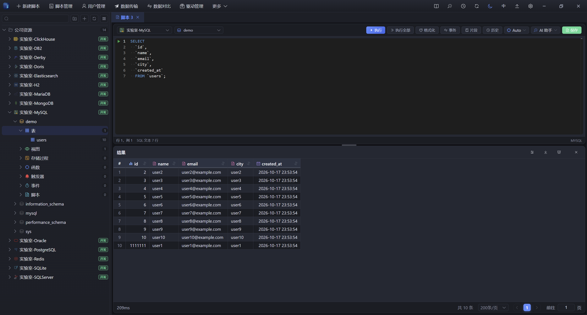
SQL 编辑器：补全、格式化、分块执行，结果与消息分栏
上下文补全 ：按光标位置提示表 / 列 / 关键字，库结构变更后实时刷新；补全只在需要时弹，不打断输入分块执行 ：光标停在哪条语句就只跑哪条；有选区跑选区；「执行全部」按分号切块依次跑，每段独立计时 ，慢在哪一段一眼看出格式化 ：整篇或仅选中段一键整理，方言按当前连接自动识别批量改写 ：选中段转大写 / 转小写 / 压成一行；把选中的多行值复制成 IN ('a','b',…) 列表执行历史 ：语句、目标库、耗时、成功与否都留在本地，下拉一键回填；首页还给近 7 天趋势停止执行 ：长查询一键取消，不等超时；取消后如实说明是「已取消」而不是「失败」多脚本页签 ：一个窗口开多份脚本，各自记录所属连接；换连接不会把别的脚本也切走
快捷键
默认键位如下，全部可在「设置 → 快捷键」里改（存在本机，不进配置文件）。
执行当前语句 ：Ctrl+Enter 执行全部 ：Ctrl+Shift+Enter 停止执行 ：Ctrl+F2格式化 ：Shift+Alt+F 注释 / 取消注释 ：Ctrl+/ 保存 ：Ctrl+S 新建脚本 ：Ctrl+N转大写 / 转小写 ：Ctrl+Shift+U / Ctrl+Shift+L 压成一行 ：Ctrl+Shift+M复制为 IN 列表 ：Ctrl+Shift+X 复制单行 ：Alt+Shift+L 选中当前语句 ：Ctrl+Shift+Y结果表格 ：刷新 F5、保存改动 Ctrl+S、加行 Alt+Insert、删行 Ctrl+Delete、回退 Ctrl+Shift+Z、向下填充 Ctrl+D、清空单元格 Delete、自适应列宽 Alt+Shift+A
AI 助手
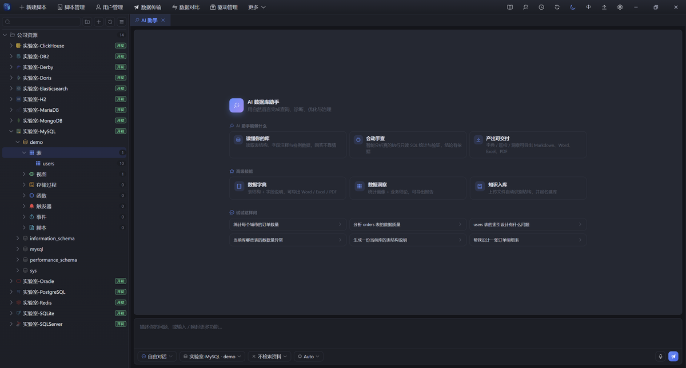
AI 助手：解释 / 优化 / 修错 / 诊断，给出的 SQL 可先看执行计划
六大动作 ：解释、优化、改写、修错、诊断、自由对话 —— 选中 SQL 就能一键让它动手，修错会自动带上完整错误上下文，结果直接回填编辑器自主排查 ：打开开关，它自己调工具查库 —— 巡检表结构、给出该加的索引、看同步与备份状态、只读试跑一遍；多轮能接着上一轮的结论往下做，问两张表就展开两张变更单 ：要动数据或结构的动作统一生成变更单，批准才执行、高危再确认一次、执行完还能撤销 —— 执行权始终在人手里记忆与记录 ：说一句「记住：本库金额单位是分」，下次在同一个库提问自动带上（区分「你说过 / AI 推断」，随时可删）；对话有记录，能续上一轮接着说用量与预算 ：每条回答脚注消耗的 token；大库上下文按预算裁剪，库级问题给全库清单（表名 + 注释）而不是整库列结构 —— 实测同一条修复从 2345 降到 956 prompt tokens
安全边界 ：AI 给出的 SQL 会先「看执行计划、试跑一次」再由你决定是否执行；写操作默认阻断，结构 / 数据变更要批准变更单（高危二次确认），生产库连接还要再过一道写确认。
AI 会把什么发给模型
担心数据，多半是「不知道到底发了什么」。这里不写「我们重视隐私」，直接把一次请求摊开 —— 你自己判断能不能接外部模型。DBmind 没有任何中转服务器 ：请求从本机直连你在设置里填的接口地址（OpenAI 兼容协议），AI 默认关闭，不配模型时一个字节都不会发。
会发 · 你的问题 ：提问原文、当前 SQL、报错文本，加最近 6 条对话（合计上限 6000 字符，超长的一条掐中间）会发 · 表结构 ：表名 + 列名 / 类型 / 是否可空 / 默认值 / 主键（不含列注释 ）；点名或命中的表最多 40 张，没点名默认前 8 张会发 · 一行样例 ：每张展开的表 1 行真实数据 ，最多前 20 列，每个值截到 24 字符 —— 模型靠它判断日期格式与状态枚举，才不会把 PAID 当成 1会发 · 全库清单 ：只在你问「这个库是干嘛的」这类库级问题时，给表名 + 表注释，一行数据都不带会发 · 你自己配过的 ：团队术语与采纳示例、长期记忆（你说过的口径）、知识库命中片段（每段 ≤900 字符并标注来源）；没配就是空的不发 · 整表数据与结果集 ：只有上面那 1 行样例。唯一例外是「自主排查」——它执行的只读 SQL 最多返回 100 行、裁到 3200 字符进入对话，它要「自己看数据」就得付这个代价，这一点写在明面上不发 · 密码与密钥 ：连接密码、SSH 口令、API Key 只存本机 ~/.dbmind/dbmind.db，接口只回「已保存」、不回显不发 · 遥测 ：没有使用统计、没有崩溃上报、不请求 DBmind 的任何服务器（「检查更新」只读版本号，与 AI 无关）
连样例也不想发？那就锁死端点 ：设置里打开「仅本地模型」，只要接口地址不是内网 / 本机就直接拒绝，并报出被拦的 host。放行回环、IPv4 私有段（10 / 172.16–31 / 192.168 / 169.254）、IPv6 ULA、.local / .internal / .lan / .corp / .intra 后缀，以及 DBMIND_AI_LOCAL_HOSTS 里你自己加的域名 —— 内网起的 Ollama / vLLM 照样能用，云端模型彻底出不去。对话与知识库向量化都 受这条约束，且是硬拦，不是只在文档里生效。
【目标数据库】类型 MYSQL ｜ 版本 5.7.42 ｜ 标识符引用风格 反引号 ｜ 分页写法 `limit {offset}, {limit}`
【表清单】共 42 张表，仅展开用到的那几张（需要其它表的字段请先说明表名）
【表 orders】
id BIGINT not null 主键
status VARCHAR(16) not null default 'NEW'
amount BIGINT not null default 0
created_at DATETIME not null
样例：id=10231, status=PAID, amount=19900, created_at=2026-10-30 12:00:00一个真实请求大概就这么长：模型能看出类型、枚举与日期格式，看不出你还有哪些列、哪些行。若前 20 列里就有手机号、身份证号，它们会随之发出 —— 介意就把端点锁在内网。开工前想先看规模 ：界面上的「这次请求花在哪」用的正是一次模型都不调的预览接口，会告诉你这次要发多少 token、各段各占多少。
结果表格与数据编辑
虚拟滚动 ：百万行丝滑滚动不卡顿，单元格完整内容悬浮查看；列宽可一键自适应（Alt+Shift+A）双击改值 ：改动先进缓冲、不立刻发请求；底栏汇总「改了几行」，确认后一次批量提交，Ctrl+Z 可逐步回退行操作 ：Alt+Insert 加行、Ctrl+Delete 删行、Ctrl+D 把上一格的值向下填充、Delete 清空单元格快照守卫 ：翻页或重跑后行号基准变了，旧缓冲自动作废并提示「缓冲已失效」—— 宁可让你重改一次，也不改错行联表编辑 ：JOIN 结果要改哪张表由你指定，工具不替猜列归属；带主键的表优先用主键定位，没有主键才全列匹配行数上限与超时 ：默认不限制返回行数（0 = 不限），可在设置里收到 100 ~ 100000 行；单语句超时默认 300 秒、可调 1 ~ 600 秒响应压缩 ：大结果集压缩后传输（实测 4.2 MB → 233 KB），总数异步统计，不阻塞首屏
事务模式
工具栏点「事务 」开启：本会话所有写语句不再自动提交，编辑器独占这条会话 ，别的页签借不走
事务内修改自己随时可查，其他会话看不到 —— 先改、先自查，再决定
满意「提交 」落地；不满意「回滚 」全部消失，什么都没发生
关页签 / 关窗口时若有未提交改动，先弹窗确认；关闭事务模式本身也会先回滚，不会把半截改动留在库里
开启 / 提交 / 回滚都进执行审计，事后能查到「谁在什么时候开的、滚没滚」
适用范围 ：走 JDBC 宿主的引擎都支持；SQLite 没有会话级事务，按钮直接不渲染（点了也不会有反应的地方，我们选择不显示）
对象浏览器
层级按引擎来 ：连接 → 数据库 → Schema → 表 / 视图 / 存储过程 / 函数 / 触发器 / 事件；有 Schema 层的引擎（PostgreSQL、SQL Server、Oracle、Db2）多展开一层，没有的不会凭空造一层懒加载 + 悬停预取 ：鼠标在某条连接上停一下，后台先把下次要用的库清单取好并缓存，点箭头时立刻出库名 —— 展开不再是「转圈等握手」右键按对象给动作 ：表——查看数据 / 查看 DDL / 编辑结构 / 重命名 / 删除 / 查看 ER 图；库——新建查询 / 查看 ER 图；视图与例程——查看定义 / 转 ALTER 编辑；用户——编辑 / 授权双击表名插入编辑器 ：写入当前光标处，省掉手敲表名拼错的机会大库不迷路 ：右上「对象搜索」跨整个连接按名字找表 / 视图 / 存储过程，直接定位到树节点
表结构与对象
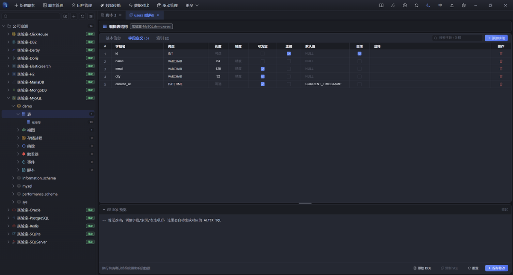
表结构编辑：字段、索引、注释在表格里改，下方实时生成 ALTER
字段表直接改 ：字段名、类型、长度 / 精度、可空、默认值、注释、索引，改完在下方实时生成 ALTER 语句先预览再执行 ：生成的是完整脚本（改类型 / 加列 / 删列 / 改默认值 / 改注释 / 重建索引），确认无误才落库改动有标记 ：修改行、新增行各自高亮，选中行整行染蓝，长表也不会改错行对象编辑 ：视图、存储过程、函数、触发器、事件右键「编辑」，取回定义转成 ALTER 送进编辑器（按连接方言自动格式化）；取不到定义时如实说「未能获取」，不塞一段猜的模板新建对象 ：新建表、新建索引、新建视图 / 触发器 / 过程都是表单先行 —— 填完先看生成的 DDL，确认再执行索引单独一页 ：增删索引字段、改唯一性与索引名，改动同样进 ALTER 预览；重建索引在支持的引擎上给可执行语句不支持的能力（如部分引擎的字段改名、表选项）会置灰并说明原因，不让人填完才报错
用户与权限
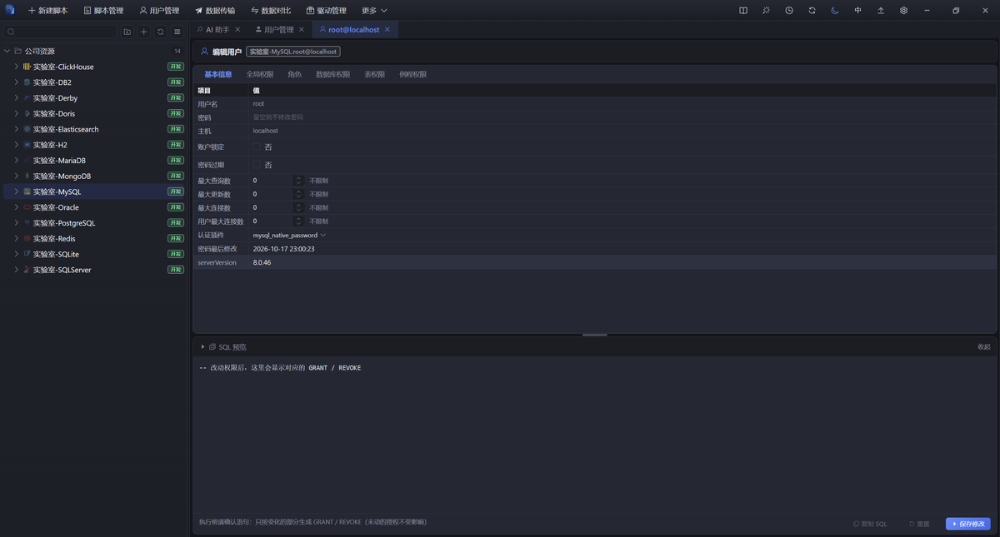
用户管理：用户 / 角色清单与分层权限矩阵，勾选即预览 GRANT / REVOKE
按引擎适配 ：MySQL / PostgreSQL / SQL Server / Oracle / ClickHouse / Doris / H2 等给出各自的用户与角色清单；外部认证的引擎（Db2、Derby）如实提示不可在这里管理，而不是给一张空表增删改都在界面上 ：新建用户 / 角色、改密码、删除，语句由方言生成；删除前提示会影响哪些对象分层权限矩阵 ：全局、服务器、数据库、Schema、表、例程按引擎实际层级出现（SQL Server 的 Schema 级与对象级各占一页），一格一个权限勾选即预览差量 ：底部 SQL 预览只显示「这一次改动」的 GRANT / REVOKE，取消勾选立刻变成对应撤销语句 —— 不是把全量权限重发一遍只提交变化 ：点「保存修改」只发差异部分，没动过的授权不受影响；保存后立即重新读取，界面里看到的就是库里现在的状态一个都不隐身 ：读回来的权限名即使不在预置清单里，也会作为一列显示并可取消 —— 宁可多显示一格，也不让某条授权在界面上「看不见」
监控与运维
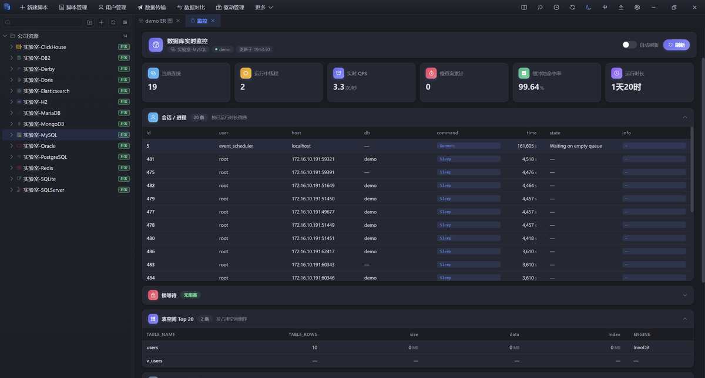
服务监控：会话、锁与库级指标，可疑会话就地终止
服务监控 ：当前会话、锁等待与库级指标集中显示，可疑会话可就地终止；覆盖 MySQL / MariaDB / PostgreSQL / 金仓 / SQL Server / ClickHouse / Doris，其余引擎如实返回「不支持 + 原因」备份 / 还原 ：按引擎原生工具导出与恢复（默认值、字符集、对象范围可配），进度与逐行日志在任务中心；失败时日志里能直接看到是哪一句报的错生成测试数据 ：按列类型批量造数（数值、字符串、日期各按类型生成），写进临时表或指定表，压测不用等业务造数对象搜索 ：不用一层层展开，直接在整个连接里搜表 / 视图 / 存储过程，按名字模糊匹配并定位到树节点表数据与 DDL 速看 ：右键「查看数据」直接出结果表格、「查看 DDL」出建表语句，不用先开编辑器写 SQL
任务中心
凡是「跑起来要等」的活都进任务中心：导出、导入、整库转储、数据对比、数据传输、备份 / 还原、生成测试数据。
后台执行 ：关掉弹窗、切到别的页签都不会中断；完成后系统通知，失败给原因进度与日志实时刷新 ：任务阶段（准备 / 读取 / 写入 / 收尾）、已处理行数、速率都能看到；任务日志最多保留 4000 行，够定位一次失败可停止 ：中途取消会真的停掉源端与目标端，不会「界面说停了、服务端还在跑」；取消后如实标为「已取消」，不报成写入失败产物可下载，也可丢弃 ：导出产物落在系统临时目录，取回后即删；过期自动清理终态记录有上限 ：结束的任务保留 30 分钟供查看，快照文件只留最新 500 份 —— 任务中心不会变成第二个垃圾场
数据目录与自愈
所有本地状态都在一个目录里：默认 ~/.dbmind（元数据库 dbmind.db、驱动缓存 drivers/、日志 logs/、任务快照 tasks/、导出临时目录），可用 DBMIND_HOME 改位置。
开机后台自愈 ：回收元数据库的空闲页（删了又写的表只把页挂回空闲链，文件不会自己变小）、清理超过 24 小时的装载残留临时文件、任务快照只留最新 500 份 —— 全部在后台线程做，失败只记日志，绝不影响启动和查询回收有门槛 ：空闲空间达到 8 MB 且占比超过 20% 才动手，避免为了几百 KB 反复重写整个库文件只还空洞，不删记录 ：查询历史与审计是用户数据，删不删只由「清空日志」按钮和保留策略决定，后台清扫一条都不动清空即回收 ：设置里点「清理缓存 / 清空日志」，当场把腾出来的空间还给文件系统，并回显释放了多少 MB实测效果 ：一个用了几个月的目录 1.5 GB → 223 MB，其中元数据库 805 MB → 54 MB
ER 关系图
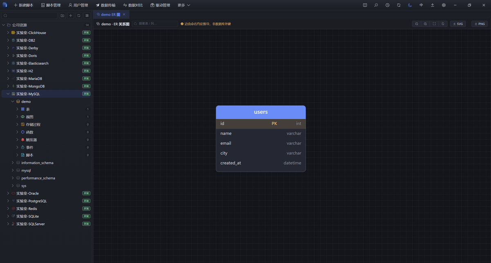
ER 关系图：命名约定 + 外键推断，可拖拽布局并导出 PNG / SVG
库节点右键「查看 ER 图」：按命名约定（_id / _no / _code 等）与真实外键推断表间关系，没有外键的库也能画出骨架
两种来源分开标 ：真实外键优先，命名推断的连线标明置信度 —— 图好看不等于关系成立，哪条是猜的写清楚纯规则推断，不消耗模型 ：这一步不调 AI、零 token，任何时候都能开自动布局（从左到右分层）后可拖拽表卡片、滚轮缩放、空白处平移、按表 / 列搜索高亮
一键导出 PNG / SVG，直接贴进设计文档；导出用固定亮色配色，深色主题下截图也不会糊成一片
模板变量
把重复查询变成填空题：SQL 里写 :name 占位符，执行前弹窗填参。
SELECT * FROM orders
WHERE dt = :dt AND org = :org;
怎么认变量 ：:name（小写字母开头，可含数字 / 下划线）；字符串字面量里的冒号不误判（'12:30' 安全），PostgreSQL 的 ::type 类型转换也不会被当成变量怎么拼值 ：纯数字直写、null（不分大小写）写成 NULL、其余按单引号字符串转义（内部的 ' 变成 ''）—— 不做字符串拼接式注入空值不蒙混 ：弹窗里留空的变量拒绝执行，不会悄悄塞一个空串进 SQL；同一个变量在语句里出现多次，用的是同一个值值按名字记住 ：上次填过的参数下一次自动带上（存本机），日常那几条过滤条件不用重复敲
SQL 片段库
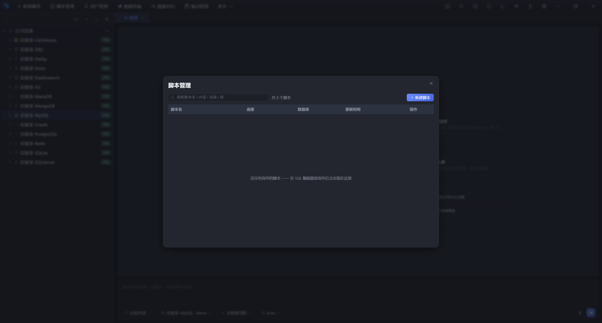
脚本管理：常用 SQL 存成片段，随时调出
选中 SQL → 工具栏「片段 → 存为片段」，命名保存（没选中就存全文）；不给名字时默认取首行前 30 字
跨会话保留，最多 100 条；点击 / 双击插入：有选区就替换选区，否则插到光标处
存在本机浏览器存储里，不跟随数据目录迁移 —— 换机器请用「导出」带走数据，或把常用 SQL 存成脚本页签
数据透视
结果表格里框选区域 → 一键汇总：计数 / 求和 / 均值 / 最小值 / 最大值 ，指标列只列数值列，不会让你对着字符串点「求和」
按列分组透视、按指标排序、TOP-N 只看前 10 / 20 / 50 / 100 组，再点开组看明细
纯前端计算 ：直接用已经取回的结果集在浏览器里累加，不再发 SQL、不占数据库资源 —— 分析一份刚查出来的数据，不会因此多压一次线上库分组结果最多保留 2000 组、下钻明细取前 10 列：超过就明确告诉你被截断，而不是悄悄少显示几行
导出与传输
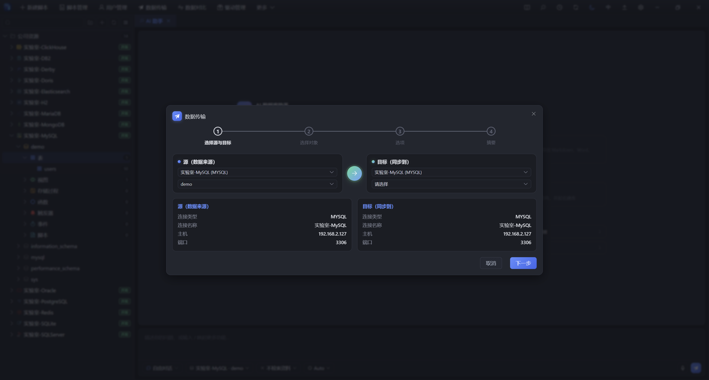
导出与传输：格式和目标一次配好，长任务转后台
导出格式 ：CSV / Excel / JSON；整库转储与脚本导出还提供 INSERT / UPDATE / DELETE 语句 与纯 DDL ，直接把数据变成可回放的 SQL导出没有行数上限 ：后端自己分页（每批 5 万行）往外写，几十万行的表也是后台稳稳跑完，不会因为「一次查太多」被内存拖死整库转储 ：CSV / Excel / JSON 一律打包成 zip（一个表一个文件），SQL 类输出直接给一个 .sql导入 ：CSV / JSON / Excel，按目标列类型转换（日期、数值、空值各按类型处理），每批写 200 行；单文件上限 256 MB，老式 .xls 明确不支持并提示另存为 .xlsx长任务后台跑 ：导出 / 整库转储 / 导入各自是独立任务，关窗口不中断，进度与日志在任务中心，完成有系统通知产物不占盘 ：导出文件落在系统临时目录，取回后即删
数据对比与传输
对比三种口径 ：只比结构、只比数据，或两者一起比；结构差异细到类型 / 长度 / 可空 / 默认值 / 主键 / 索引 / 外键数据对比 ：以主键 / 唯一键为基准逐行比，差异样本可调（10 ~ 500 行）；单侧最多约 200 万行参与，二进制列自动排除避免误判传输对象 ：表、视图、函数、存储过程、触发器、事件一次勾选；先出计划（目标端要建什么、写多少行）再执行三种写入模式 ：直接插入 insert、清空后插入 truncate_insert、按主键合并 upsert（引擎原生 upsert 可用时走原生，否则退化为「查后写」两段式）同实例走直拷 ：源与目标在同一实例时，直接让数据库自己 insert into … select …，数据根本不经过客户端 —— 20 万行 6 列实测 6 秒 ，走客户端管道是 239 秒跨实例也能快 ：自动按行数分片、多连接并发、传输链路压缩，同一份数据 239 秒 → 35 秒 ；并发数、分片数、行 / 字节限速都可调按表加过滤条件 ：同一批对象里，可以给某张表单独写 where 只搬一部分数据（按表名给条件）跨环境同步（开发 → 测试 → 生产）不用再手工拼脚本，生产连接上的写入仍受 PROD 保护；中途取消会真的停下两端，不会「界面说停了、服务端还在写」
安全护栏
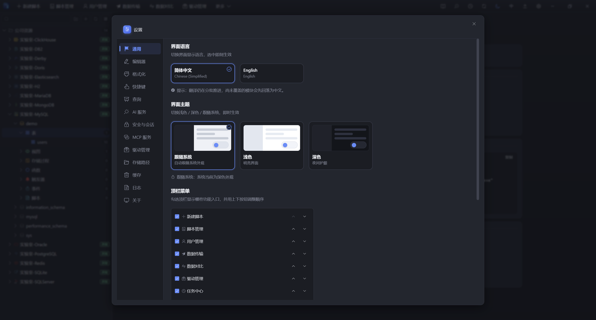
设置中心：生产库保护、返回行数上限、AI 与外观
PROD 保护默认开启 ：标注为生产的连接，所有改动数据或结构的操作 （执行脚本、改表、编辑数据、导入 / 同步 / 还原）默认一律拦下，查询不受影响；开发 / 测试 / 未标注的库照常，确需临时改生产可一键关闭PROD 标记全程外显 ：页签、连接下拉、对象树都带红色徽章，连错库这件事从源头消失写操作二次确认 ：INSERT / UPDATE / DELETE、DROP、TRUNCATE 执行前先预览影响，确认才走超时与行数预算 ：单语句超时默认 300 秒（可调 1 ~ 600），返回行数默认不限（可收到 100 ~ 100000）；误点 SELECT * 也不会把客户端拖死AI / MCP 通道默认只读 ：两层锁 —— 语句分类先拒，内核的 AI 通道闸门再拒一次；已递 SQL 的 AI 请求要动数据，只能生成变更单等你批准全程审计 ：执行过的语句、事务动作、AI 调用都留痕，可查可导出（见执行审计 ）
驱动管理
按需下载 ：首次连接某类型时自动从 Maven 取对应 JDBC 驱动并缓存到本地，不预装一堆用不到的 jar进度可见 ：下载中在连接弹窗底部与设置页显示文件名、第几个、已下载多少，长驱动不会「卡住没反应」可替换可修复 ：设置里能重新下载 / 修复某个驱动；内网可把镜像换成私有仓库，或直接把 jar 放进数据目录的 drivers/驱动跑在独立 Java 宿主 ：JDBC 驱动由单独的 Java 进程加载，驱动崩溃不会带倒客户端；宿主需要 Java 17+，启动脚本会自动探测并固定（也可用 DBMIND_JAVA 指定）
执行审计
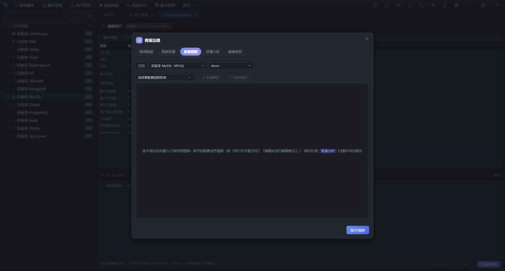
执行审计与数据治理：谁在什么时候执行了什么
每条语句自动留痕 ：语句、连接与库、返回行数、耗时、成功与否、错误码、执行时间、来源（界面 / 任务 / AI），都写进本地元数据库事务动作同样留痕 ：开启 / 提交 / 回滚各一条记录，事后能查到「谁在什么时候开的、滚没滚」AI 调用单独记账 ：时间、类型、提问原文写进独立的 AI 审计表 —— 与查询历史分开，既方便排查「AI 到底问了什么」，也不会混进 SQL 历史保留策略可配 ：按条数（history.maxEntries）或天数（history.retentionDays）自动裁剪，默认都是 0 = 不自动删；审计级别默认记录全部看得见的地方 ：编辑器内的执行历史下拉、首页近 7 天趋势图、设置页的日志与「清空日志」（清空会同时清掉查询历史与 AI 审计）
常见问题
需要联网吗？ 除了「第一次连接某类型时下载驱动」和「检查更新」，其余全部本地完成；AI 也要你自己配了模型才会发请求我的数据存在哪？ 默认 ~/.dbmind（元数据库、驱动、日志、任务快照），可用 DBMIND_HOME 改到别处 —— 备份与迁移搬这一个目录就够了「驱动宿主未就绪」？ 宿主需要 Java 17+，启动脚本会自动探测并固定；也可设 DBMIND_JAVA 指向 Java 17+ 的 java 可执行文件内网无法下载驱动？ 切换驱动镜像到内网仓库，或手动放入数据目录的 drivers/事务按钮不显示？ SQLite 等嵌入式引擎没有会话级事务，按钮自动隐藏；不是坏了编辑提交报「缓冲已失效」？ 翻页 / 重跑后行号基准变了，重新双击编辑即可 —— 这是防改错行的保护结果只回来一部分？ 看两处：语句里自带的 LIMIT，以及设置里的「返回行数上限」（默认不限，被设过就按 100 ~ 100000 截断）AI 为什么让我先给表名？ 大库只展开你点名或问题里提到的表；库级问题只给全库清单（表名 + 注释）。点名表名后它会拿到那张表的真实列结构，写出来的 SQL 才对得上支持哪些平台？ Windows（安装包 / MSI / 免安装 zip）、macOS（Apple 芯片与 Intel）、Linux（deb / AppImage）；另有 Web、CLI 与 MCP 三种形态能管 NoSQL 吗？ 能连 Redis / MongoDB / Elasticsearch，库与集合浏览、文档查看、监控各按原生语义；SQL 编辑器只服务 SQL 数据源
社区暂未建立。使用中遇到问题、有功能建议，欢迎通过以下方式联系我们：
也欢迎加入我们一起建设 DBmind —— 文档、翻译、驱动适配、功能开发，每一份贡献都算数。